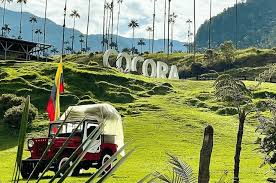

Salento
40 km from Pereira
A colorful town known for its colonial architecture and the Cocora Valley.
Salento
- Cocora Valley - The tallest wax palms in the world
- Calle Real - Colonial architecture and handicrafts
- Viewpoints with spectacular vistas
- Traditional Quindío cuisine
How to get there: Direct buses from Pereira's Terminal